СТРОИТЕЛЬНЫЕ НОРМЫ И ПРАВИЛА
ПОЛИГОНЫ
ПО ОБЕЗВРЕЖИВАНИЮ И ЗАХОРОНЕНИЮ
ТОКСИЧНЫХ ПРОМЫШЛЕННЫХ
ОТХОДОВ
ОСНОВНЫЕ ПОЛОЖЕНИЯ ПО ПРОЕКТИРОВАНИЮ
СНиП 2.01.28-85
ГОСУДАРСТВЕННЫЙ КОМИТЕТ СССР ПО ДЕЛАМ СТРОИТЕЛЬСТВА
МОСКВА 1985
СНиП 2.01.28-85. Полигоны по обезвреживанию и захоронению токсичных промышленных отходов. Основные положения по проектированию /Госстрой СССР. - М.: - ЦИТП Госстроя СССР, 1985.
РАЗРАБОТАНЫ ГосНИИхлорпроектом Минхимпрома (канд. техн. наук Н. Я. Степ; Л Н. Гуральник, В. А. Шевлягин) и Казводоканалпроектом Госстроя СССР (Ю. И. Ткаченко, В. И. Мираков, Ю. А. Арсеньев).
ВНЕСЕНЫ Минхимпромом.
ПОДГОТОВЛЕНЫ К УТВЕРЖДЕНИЮ Главтехнормированием Госстроя СССР (Ю. В. Полянский) и Главгосэкспертизой Госстроя СССР (В. И. Рудаков).
При пользовании нормативным документом следует учитывать утвержденные изменения строительных норм и правил и государственных стандартов, публикуемые в журнале „Бюллетень строительной техники" Госстроя СССР и информационном указателе „Государственные стандарты СССР" Госстандарта.
|
Государственный комитет СССР по делам строительства (Госстрой СССР) |
Строительные нормы и правила |
СНиП 2.01.28-85 |
|
Полигоны по обезвреживанию и захоронению токсичных промышленных отходов. Основные положения по проектированию |
- |
Настоящие нормы распространяются на проектирование полигонов по обезвреживанию и захоронению токсичных промышленных отходов (в дальнейшем - полигоны).
Нормы не распространяются на проектирование полигонов захоронения радиоактивных отходов, полигонов для твердых бытовых отходов и накопителей нетоксичных промышленных отходов.
Состав проекта полигона устанавливается нормативным документом о составе, порядке разработки, согласования и утверждения проектно-сметной документации на строительство предприятий, зданий и сооружений, утвержденным Госстроем СССР.
1.1. Полигоны являются природоохранными сооружениями и предназначены для централизованного сбора, обезвреживания и захоронения токсичных отходов промышленных предприятий, научно-исследовательских организаций и учреждений.
Количество и мощность полигонов определяются технико-экономическими обоснованиями на строительство полигонов.
1.2. Материалы (технологические регламенты для проектирования технологических схем, методов и организации производства процессов утилизации, обезвреживания и захоронения) в зависимости от видов токсичных промышленных отходов должны выдаваться заказчику проекта организациями:
Минцветмета СССР - мышьяксодержащие неорганические твердые отходы и шламы; ртутьсодержащие отходы; циансодержащие сточные воды и шламы; отходы, содержащие свинец, цинк, кадмий, никель, сурьму, висмут, кобальт и их соединения;
Минхимпрома - отходы, содержащие металлоорганические токсичные соединения олова, галоген-органические и кремнийорганические соединения; отходы щелочных металлов, фосфорорганических соединений; шламы производства тетраэтилсвинца; использованные органические растворители (в соответствии с номенклатурой продукции, закрепленной за министерством); пестициды, пришедшие в негодность и запрещенные к применению;
Минудобрений - фосфорсодержащие и фторсодержащие отходы и шламы; пестициды, пришедшие в негодность и запрещенные к применению;
Минавтопрома - отходы гальванических производств (научно-исследовательские работы по регенерации отходов гальванических производств осуществляются с привлечением Института химии и химической технологии Академии наук Литовской ССР);
Миннефтехимпрома СССР - отходы нефтепереработки, нефтехимии и сланцехимической переработки; использованные органические растворители;
Минчермета - хромсодержащие отходы; шламы и сточные воды; отходы карбонилов железа и никеля.
Классификация (перечень) и токсичность отходов (класс опасности) определяются в соответствии с классификатором токсичных промышленных отходов и методическими рекомендациями по определению токсичности таких отходов, утвержденными Минздравом СССР и ГКНТ.
1.3. В составе полигона следует предусматривать:
завод по обезвреживанию токсичных промышленных отходов;
участок захоронения токсичных промышленных отходов;
гараж специализированного автотранспорта, предназначенного для перевозки токсичных промышленных отходов.
Примечания: 1. Завод по обезвреживанию токсичных промышленных отходов предназначен для сжигания и физико-химической переработки отходов с целью их обезвреживания или понижения токсичности (класса опасности), перевода их в нерастворимые формы, обезвоживания и сокращения объема отходов, подлежащих захоронению.
2. Участок захоронения токсичных промышленных отходов представляет собой территорию, предназначенную для размещения специально оборудованных карт (котлованов), в которые складируются токсичные твердые отходы различных классов опасности, а также вспомогательных зданий и сооружений.
1.4. Промышленные токсичные отходы, поступающие на полигон, по своим физико-химическим свойствам и методам переработки подразделяются на группы, в зависимости от которых применяется тот или иной метод обезвреживания и захоронения. Перечень групп отходов и рекомендуемых методов их переработки указан в рекомендуемом приложении 1.
1.5. Приему на полигон подлежат только токсичные промышленные отходы I, II, III и, при необходимости, IV классов опасности, перечни которых в каждом конкретном случае согласовываются с органами и учреждениями санитарно-эпидемиологической и коммунальной служб, заказчиком и разработчиком проекта полигона.
|
Внесены Минхимпромом |
Утверждены постановлением Государственного комитета СССР по делам строительства от 26 июня 1985 г. № 98 |
Срок введения в действие |
Твердые промышленные отходы IV класса опасности по согласованию с органами и учреждениями санитарно-эпидемиологической и коммунальной служб могут вывозиться на полигоны складирования городских бытовых отходов и применяться в качестве изолирующего инертного материала в средней и верхних частях карт полигона. Прием твердых промышленных отходов IV класса опасности на участок захоронения токсичных промышленных отходов допускается при соответствующем технико-экономическом обосновании.
Жидкие токсичные промышленные отходы перед вывозом на полигон должны быть обезвожены на предприятиях. Допускается прием на полигон жидких токсичных отходов только от промышленных предприятий, на которых при соответствующем технико-экономическом обосновании нерационально их обезвоживание.
Приему на полигон не подлежат следующие виды отходов:
а) отходы, для которых разработаны эффективные методы извлечения металлов или других веществ (отсутствие методов утилизации и переработки отходов в каждом конкретном случае должно быть подтверждено соответствующими министерствами или ведомствами);
б) радиоактивные отходы;
в) нефтепродукты, подлежащие регенерации.
2.1. Размещение полигонов должно осуществляться по территориальному принципу и предусматриваться при разработке схем и проектов районной планировки.
2.2. Полигоны следует размещать:
на площадках, на которых возможно осуществление мероприятий и инженерных решений, исключающих загрязнение окружающей среды;
с подветренной стороны (для ветров преобладающего направления) по отношению к населенным пунктам и зонам отдыха;
ниже мест водозаборов питьевой воды, рыбоводных хозяйств, мест нереста, массового нагула и зимовальных ям рыбы;
на землях несельскохозяйственного назначения или непригодных для сельского хозяйства либо на сельскохозяйственных землях худшего качества;
в соответствии с гидрогеологическими условиями, как правило, на участках со слабофильтрующими грунтами (глиной, суглинками, сланцами), с залеганием грунтовых вод при их наибольшем подъеме, с учетом подъема воды при эксплуатации полигона не менее 2 м от нижнего уровня захороняемых отходов.
При неблагоприятных гидрогеологических условиях на выбранной площадке необходимо предусматривать инженерные мероприятия, обеспечивающие требуемое снижение уровня грунтовых вод.
2.3. Размещение полигонов не допускается:
на площадях залегания полезных ископаемых без согласования с органами Государственного горного надзора;
в опасных зонах отвалов породы угольных и сланцевых шахт или обогатительных фабрик;
в зонах активного карста;
в зонах оползней, селевых потоков и снежных лавин;
в заболоченных местах;
в зоне питания подземных источников питьевой воды;
в зонах санитарной охраны курортов;
на территориях зеленых зон городов;
на землях, занятых или предназначенных под занятие лесами, лесопарками и другими зелеными насаждениями, выполняющими защитные и санитарно-гигиенические функции и являющимися местом отдыха населения;
на участках, загрязненных органическими и радиоактивными отходами, до истечения сроков, установленных органами санитарно-эпидемиологической службы.
2.4. Устройство полигонов на просадочных грунтах допускается при условии полного устранения просадочных свойств грунтов.
2.7. Материалы инженерных изысканий должны отвечать требованиям СНиП II-9-78 и содержать:
топографические планы района строительства полигона в отведенных границах и масштабах, устанавливаемых проектной организацией;
инженерно-геологическую характеристику грунтов (в основании карт захоронения) до водоупора с заглублением в него на 3 м. При залегании водоупора на глубине более 25 м глубина геологических выработок должна быть не менее чем на 6 м ниже дна карт, а при необходимости устройства дренажа глубина выработок должна уточняться согласно прилагаемой схеме дренажа;
данные о карьерах глин или наличии глин с рекомендациями по их обработке с целью доведения до требуемой водонепроницаемости, а также данные о карьерах других материалов (песка, гравия, камня);
гидрогеологическую характеристику, включающую описание режима уровней грунтовых вод, коэффициенты фильтрации грунтов, области питания и области разгрузки грунтового потока, прогноз повышения уровня грунтового потока и его химический состав;
метеорологическую характеристику в объеме климатического очерка с указанием температурного и ветрового режимов, снегового покрова, промерзания почвы, испаряемости с водной поверхности и обеспеченности осадков. При наличии оврагов, проходящих через площадку, устанавливается их водосборная площадь, определяются максимальные расходы дождевых и талых вод.
2.5. Размер участка захоронения токсичных промышленных отходов устанавливается исходя из срока накопления отходов в течение 20-25 лет.
2.6. В состав исходных данных для проектирования полигона должны входить рекомендации по защите карт захоронения от грунтовых и поверхностных вод, сведения об отведенных местах сброса вод и материалы инженерных изысканий.
2.8. Места бурения разведочных скважин должны фиксироваться на плане, а также должны указываться мероприятия по их тампонажу.
2.9. Объекты полигона по обезвреживанию и захоронению токсичных промышленных отходов следует, как правило, размещать:
завод по обезвреживанию токсичных промышленных отходов - на возможно кратчайшем расстоянии от предприятия - основного поставщика отходов;
участок захоронения отходов - в соответствии с требованиями разд. 2;
гараж специализированного автотранспорта, - как правило, рядом с заводом по обезвреживанию токсичных промышленных отходов.
Примечание. Допускается размещение всех объектов полигона на одной площадке при отсутствии в промузле города территории для размещения заводя и гаража.
3.1. Плотность застройки завода по обезвреживанию токсичных промышленных отходов следует принимать не менее 30 %.
3.2. Участок захоронения отходов по периметру должен иметь ограждение из колючей проволоки высотой 2,4 м с устройством автоматической охранной сигнализации.
На участке захоронения токсичных промышленных отходов по его периметру, начиная от ограждения, должны последовательно размешаться:
кольцевой канал;
кольцевое обвалование высотой 1,5 м и шириной поверху 3 м;
кольцевая автодорога с усовершенствованным капитальным покрытием и въездами на карты;
ливнеотводные лотки вдоль дороги или кюветы с облицовкой бетонными плитами.
3.3. Внешний кольцевой канал должен рассчитываться на расход 1 % обеспеченности паводка с прилегающей водосборной площади. Отвод воды должен предусматриваться в ближайший водоток.
При необходимости отвода от площадки полигона русла водостока расчетный расход воды обводного канала следует принимать с 0,1 %-ной обеспеченностью.
3.4. В проекте следует предусматривать разделение участка захоронения токсичных промышленных отходов на производственную и вспомогательную зоны. Расстояние между зданиями и сооружениями зон должно быть не менее 25 м.
3.5. В производственной зоне участка размещаются карты с учетом раздельного захоронения отходов различных классов опасности, контрольно-регулирующие пруды дождевых и дренажных вод, а при необходимости - и пруды-испарители.
3.6. Во вспомогательной зоне следует предусматривать:
административно-бытовые помещения, лабораторию;
площадку с навесом для стоянки спецмашин и механизмов;
мастерскую для текущего ремонта спецмашин и механизмов;
склад топливно-смазочных материалов;
склад для хранения материалов, предназначенных для устройства водонепроницаемых покрытий при консервации карт;
котельную со складом топлива;
сооружение для чистки, мойки и обезвреживания спецмашин и контейнеров;
автомобильные весы;
контрольно-пропускной пункт.
Примечания: 1. Строительство котельной допускается предусматривать при отсутствии других источников теплоснабжения.
2. При расположении завода по обезвреживанию токсичных промышленных отходов и участка захоронения отходов на одной площадке административно-бытовые помещения, лаборатории, площадка с навесом для стоянки спецмашин и механизмов, автовесы, сооружения для чистки, мойки и обезвреживания спецмашин и контейнеров, склад топливно-смазочных материалов, как правило, должны быть общими.
3.7. Отвод внутренних дождевых и талых вод следует предусматривать в контрольно-регулирующие пруды, состоящие из двух секций. Вместимость каждой секции пруда следует рассчитывать на объем максимального суточного дождя повторяемостью раз в 10 лет. Осветленные воды после контроля следует направлять: чистые - на производственные нужды, при отсутствии потребителя - в кольцевой канал; загрязненные - в пруд-испаритель, при невозможности его устройства - на завод по обезвреживанию токсичных промышленных отходов.
3.8. Площадь пруда-испарителя определяется исходя из возможного загрязнения 10 % среднегодового расчетного стока дождевых и талых вод с территории участка захоронения.
3.9. Если по климатическим условиям устройство естественного испарителя невозможно, то в проекте должен предусматриваться регулирующий водоем для обеспечения равномерной подачи стоков на завод по обезвреживанию токсичных промышленных отходов.
3.10. Пруды-испарители, контрольно-регулирующие пруды и регулирующие водоемы должны иметь противофильтрационные экраны или завесы в соответствии с классом опасности стоков.
Конструкции противофильтрационных экранов и их применение приведены в справочном приложении 2. Класс опасности загрязненных дождевых и грунтовых вод должен приниматься по наиболее токсичному веществу (или сумме веществ одного класса) в отходах, складируемых в картах, если его (их) содержание в отходах составляет не менее 10 % по массе.
3.11. При необходимости размещения участка захоронения отходов на территории с высоким стоянием уровня грунтовых вод (менее 2 м от дна карт с учетом ожидаемого повышении уровня при эксплуатации) с коэффициентом фильтрации грунта не менее 10-3 см/с следует предусматривать дренаж с отводом воды в контрольно-регулирующие пруды дренажных вод.
3.12. При водопритоке дренажных вод более 0,1 м3/с и наличии водоупора от поверхности земли на расстоянии до 25 м по контуру участка под кольцевым обвалованием следует предусматривать противофильтрационную завесу - глиняную диафрагму толщиной не менее 0,6 м с градиентом напора не более 15.
Допускается предусматривать головную диафрагму с трех сторон, когда необходимо изолировать зону питания, при этом может быть обеспечено снижение уровня грунтовых вод без дополнительного дренажа, что должно быть обосновано гидрогеологическими расчетами.
3.13. При грунтах основания с коэффициентом фильтрации менее 10-3 см/с и переслаивающемся литологическом строении (суглинках, супесях, мелких песках), когда горизонтальный или вертикальный трубчатые дренажи неэффективны, под экранами у дна карт следует предусматривать пластовый дренаж с отводом воды из него в контрольно-регулирующие пруды дренажных вод.
3.14. В проектах контрольно-регулирующих прудов дождевых и талых вод должна предусматриваться возможность переключения приема загрязненного стока в одну из секций.
3.15. Сооружения для чистки, мойки и обезвреживания спецмашин и контейнеров должны быть расположены на выезде из производственной зоны полигона на расстоянии не менее 50 м от административно-бытовых зданий.
3.16. Подъездные пути и производственная зона участка захоронения отходов должны иметь искусственное освещение. Освещенность рабочих карт и подъездных путей следует принимать 5 лк.
3.17. При проектировании объектов полигона следует принимать вторую категорию надежности электроснабжения.
3.18. Объекты полигона должны иметь телефонную связь между собой и с предприятиями-поставщиками отходов.
3.19. Внеплощадочные водоснабжение и канализация объектов полигона решаются в соответствии с требованиями СНиП 2.04.02-84 и СНиП 2.04.03-85.
3.20. Гидротехнические сооружения в составе полигона следует относить ко II классу капитальности.
4.1. Мощность полигона определяется количеством токсичных отходов (тыс. т), которое может быть принято на полигон в течение одного года, включая поступающие на завод по обезвреживанию токсичных промышленных отходов и на участок захоронения отходов. Количество отходов, подлежащих захоронению в контейнерах, определяется с учетом массы контейнеров.
4.2. При определении требуемой вместимости карт на участке захоронения отходов кроме отходов, поступающих непосредственно на захоронение от промышленных предприятий, необходимо также учитывать твердые токсичные отходы, образующиеся на заводе по обезвреживанию отходов.
5.1. Жидкие негорючие отходы, поступающие на полигон, перед захоронением следует обезвоживать и при технической возможности обезвреживать (понижение валентности некоторых металлов, перевод в нерастворимые соединения).
5.2. Жидкие, твердые и пастообразные горючие отходы, поступающие на полигон, следует сжигать в печах по возможности с утилизацией физического тепла продуктов сгорания, с последующей очисткой отходящих газов от вторичных вредных веществ.
5.3. Твердые и пастообразные негорючие отходы, содержащие растворимые вещества I класса опасности, как правило, при технической возможности перед захоронением подлежат частичному обезвреживанию, заключающемуся в переводе токсичных веществ в нерастворимые соединения. Допускается при соответствующем технико-экономическом обосновании непосредственное захоронение твердых и пастообразных негорючих отходов, содержащих растворимые вещества I класса опасности, в герметичных металлических контейнерах (см. п. 6.14).
5.4. Переработку отходов, поступающих на полигон, следует осуществлять на заводе по обезвреживанию токсичных промышленных отходов.
Разработку технологической части проекта завода следует выполнять на основании исходных данных, полученных в результате научно-исследовательских и экспериментальных работ на моделях с реальными отходами, и с учетом требований пп. 1.2 и 2.7.
5.5. В составе завода по обезвреживанию токсичных промышленных отходов следует предусматривать:
административно-бытовые помещения, лабораторию, центральный диспетчерский щит управления и контроля за технологическими процессами, медпункт и столовую;
цех термического обезвреживания твердых и пастообразных горючих отходов;
цех термического обезвреживания сточных вод и жидких хлорорганических отходов;
цех физико-химического обезвреживания твердых и жидких негорючих отходов;
цех обезвреживания испорченных и немаркированных баллонов;
цех обезвреживания ртутных и люминесцентных ламп;
цех приготовления известкового молока;
склад легковоспламеняющихся и горючих жидкостей с насосной;
открытый склад под навесом для отходов в таре;
склад химикатов и реактивов;
склад огнеупорных изделий;
автомобильные весы;
спецпрачечную (при отсутствии возможности кооперирования);
механизированную мойку спецмашин, тары и контейнеров;
ремонтно-механический цех;
контрольно-пропускной пункт;
общезаводские объекты в соответствии с потребностями завода.
5.6. В цехе термического обезвреживания твердых и пастообразных горючих отходов следует предусматривать:
бункера для приема и промежуточного хранения твердых горючих отходов с мостовым грейферным краном;
печи для сжигания отходов;
котлы-утилизаторы для выработки водяного пара;
систему очистки дымовых газов от пыли;
систему физико-химической очистки дымовых газов (от хлористого и фтористого водорода, оксидов серы и других примесей);
систему удаления и складирования золы и шлака.
5.6.1. Проектом должно быть предусмотрено измельчение (перед сжиганием) крупных фракций твердых отходов, ограничиваемых размерами приемного штуцера дозирующего устройства печи.
5.6.2. Конструкция печей должна обеспечивать сжигание твердых, жидких и пастообразных (как правило, в таре) отходов. При разработке конструкций печей следует учитывать возможность в будущем полного изменения состава отходов.
5.6.3. Загрузочные устройства печей следует проектировать таким образом, чтобы различные отходы могли поступать в печь непрерывно и равномерно по количеству и тепловой нагрузке печи для достижения относительно равномерного сгорания отходов и количества получаемого пара в котле-утилизаторе.
5.6.4. Температура сжигания отходов в печи должна быть не ниже 1000 °С, при наличии галогенсодержащих соединений - не ниже 1200 °С.
5.6.5. Галогенсодержащие отходы следует дозировать в печь в таких количествах, чтобы выбросы в атмосферу хлористого и фтористого водорода в каждом конкретном случае не превышали ПДВ с учетом фоновых загрязнений и содержание хлористого и фтористого водорода в дымовых газах не превышало 0,1 % по объему.
5.6.6. После печи сжигания промышленных отходов следует предусматривать камеру дожигания, в которой при соответствующей дополнительной подаче топлива и воздуха при соответствующей высокой температуре и продолжительном (не менее 2,0 с) времени пребывания достигается полное окисление продуктов неполного сгорания.
5.6.7. Конструкцию камеры дожигания и расположение горелок на ней следует проектировать так, чтобы обеспечить полное перемешивание дымовых газов, поступающих из печи, с образующимися дымовыми газами в камере дожигания.
5.6.8. Температура дымовых газов на выходе из камеры дожигания должна быть не ниже 1000 °С, а при наличии галогенсодержащих соединений - от 1200 до 1450 °С.
5.6.9. Визуальный контроль пламени в печи для сжигания промышленных отходов, как правило, следует предусматривать с помощью телевизионной камеры.
5.6.10. Котел-утилизатор, устанавливаемый за камерой дожигания, должен удовлетворять следующим условиям работы:
температура дымовых газов на входе должна быть до 1450 °С;
должка обеспечиваться устойчивая, надежная работа котла при резких колебаниях тепловой нагрузки (до 30 % в 1 мин);
температура стенок труб котла, соприкасающихся с дымовыми газами, должна находиться в пределах 150 - 350 °С;
температура дымовых газов на входе в конвективные поверхности котла должна быть не выше 600 °С (для исключения оседания расплавленной золы на поверхности и, следовательно, предотвращения коррозии);
температура дымовых газов на выходе из котла должна быть в пределах 250 - 300 °С;
конструкция котла должна обеспечивать доступ для осмотра поверхностей нагрева;
в конструкции котла должны быть предусмотрены устройства для чистки поверхностей нагрева.
5.6.11. При наличии в промышленных отходах, поступающих на сжигание, веществ, имеющих высокое давление паров при температуре от 150 до 300 °С (окисей мышьяка, селена, фосфора, а также хлоридов сурьмы, мышьяка, железа, свинца, кадмия, висмута и др.), следует предусматривать мокрую ступень очистки. Система мокрой очистки должна обеспечить снижение содержания указанных загрязнений в дымовых газах, сбрасываемых в атмосферу, до значений ниже предельно допустимых выбросов.
5.6.12. Котельно-вспомогательное оборудование котлов-утилизаторов следует проектировать в соответствии с требованиями СНиП II-35-76.
5.7. В цехе термического обезвреживания сточных вод и жидких хлорорганических отходов следует предусматривать:
печи для термического обезвреживания сточных вод и жидких горючих отходов с системой очистки дымовых газов от уноса минеральных солей и системой вывода смеси минеральных солей в сухом виде;
печи для термического обезвреживания жидких хлорорганических отходов с системой утилизации хлористого водорода из дымовых газов с получением хлористого кальция или товарной соляной кислоты и системой санитарной очистки отходящих газов.
5.7.1. При термическом обезвреживании сточных вод и жидких органических отходов должны соблюдаться следующие условия:
температура отходящих газов в циклонных печах или печах других видов должна быть в пределах 950-1050 °С;
нейтрализацию образующихся в результате окисления органических веществ хлористого водорода, оксидов серы и фосфора следует осуществлять в объеме печи едким натром или карбонатом натрия. Подачу едкого натра (карбоната натрия) в объем печи следует осуществлять с 10 %-ным избытком совместно со сточными водами;
образующийся в циклонной топке плав смеси минеральных солей следует выводить в кубовую часть скруббера-охладителя;
охлажденные газы следует очищать от минеральных солей в скоростных турбулентных газопромывателях, откуда слабый раствор солей необходимо возвращать в скруббер-охладитель для концентрирования посредством упаривания за счет физического тепла высокотемпературных газов, выходящих из печи. Концентрированный раствор солей следует непрерывно выводить из скруббера-охладителя с подачей в систему выделения смеси минеральных солей в сухом виде (сушка, центрифугирование и т.д.).
Примечание. Допускается вывод плава смеси минеральных солей из циклонной печи в охладитель-гранулятор для получения солей в твердом виде, а также очистка предварительно охлажденных дымовых газов в сухих газоочистителях, при этом для охлаждения газов следует применять аппараты полного испарения.
5.7.2. При термическом обезвреживании жидких хлорорганических отходов должны соблюдаться следующие условия:
термическое обезвреживание их следует, как правило, осуществлять в циклонной печи при температуре от 1200 до 1500 °С;
образующийся при сгорании отходов хлористый водород следует утилизировать с получением соляной кислоты или других хлорсодержащих продуктов;
при тепловой нагрузке печи свыше 7·106 Вт (в случае получения соляной кислоты) для охлаждения газообразных продуктов сгорания отходов перед стадией абсорбции хлористого водорода следует предусматривать применение котла-утилизатора, в котором осуществляется утилизация тепла с выработкой насыщенного пара давлением от 1,3 до 4,0 МПа;
при сжигании хлорорганических отходов с содержанием органически связанного хлора свыше 70 % по массе следует предусматривать предварительное смешивание отходов с жидким топливом (отходами) в соотношении, обеспечивающем устойчивое горение смеси;
для подачи в печи отходов, как правило, следует применять форсунки пневматического типа со спрямленными каналами по ходу отходов с целью уменьшения вероятности забивки форсунки, а также обеспечения возможности быстрой механической чистки ее без остановки печи;
воздух на горение отходов следует подавать с избытком не менее 20 %. Верхняя граница избытка воздуха лимитируется содержанием в газообразных продуктах сгорания непрореагировавшего кислорода, количество которого во избежание образования большого количества хлора не должно превышать 3,5 % по объему. При необходимости для поддержания температуры горения отходов в пределах 1200 - 1500 °С в объем печи могут впрыскиваться вода, соляная кислота или вдуваться водяной пар;
абсорбцию хлористого водорода из газообразных продуктов сгорания отходов при получении соляной кислоты предпочтительно производить в изотермических абсорберах;
для санитарной очистки газов перед выбросом их в атмосферу обязательна щелочная промывка с использованием водного раствора едкого натра или карбоната натрия. Концентрация поступающего на промывку газов раствора исходя из условия предотвращения кристаллизации промежуточного продукта щелочной промывки -бикарбоната натрия должна быть не выше 5 % по массе;
после щелочной промывки следует предусматривать локальный узел разрушения гипохлорита натрия, образующегося при щелочной промывке газов и содержащегося в отработанном растворе.
Примечание. Для санитарной очистки отходящих газов допускается использование известкового молока при условии, что применение аппаратов трехфазной системы обеспечит надежную очистку газов от хлористого водорода и хлора, при этом следует предусматривать локальный узел разрушения гипохлорита кальция.
5.8. В цехе физико-химического обезвреживания твердых и жидких негорючих отходов следует предусматривать :
а) установку по обезвреживанию твердых циансодержащих отходов, включающую системы:
приема и измельчения отходов;
приготовления суспензии и перевода цианидов в цианаты;
фильтрации суспензии;
б) установку по обезвреживанию отходов гальванических производств, включающую:
емкостный парк для приема отходов;
систему восстановления Сг+6 и Мn+7 раствором серной кислоты и железного купороса;
систему осаждения ионов тяжелых металлов известковым молоком;
систему фильтрации осадка;
в) установку обезвреживания мышьяксодержащих отходов, включающую:
емкостный парк для приема отходов;
систему перевода соединений трехвалентного и треххлористого мышьяка в мышьяковую кислоту, арсенат натрия и нитрооксифенил-аросоновую кислоту;
систему осаждения мышьяксодержащих соединений известковым молоком в виде арсената кальция;
систему фильтрации осадка;
систему отпарки фильтрата.
5.9. В корпусе обезвреживания испорченных и немаркированных баллонов следует предусматривать:
бронеямы для подрыва баллонов;
систему промывки и обезвреживания бронеям и отходящих газов;
погребок для хранения взрывчатых веществ.
5.10. В корпусе обезвреживания ртутных и люминесцентных ламп следует предусматривать:
складское помещение для приема ламп;
агрегаты для обезвреживания люминесцентных и ртутных ламп;
систему очистки технологических газов от ртути;
систему очистки промывных вод от ртути;
складское помещение для хранения контейнеров со ртутьсодержащими отходами, направляемыми не переработку.
Примечание. Состав основных технологических корпусов, вспомогательных зданий и сооружений может быть изменен в зависимости от конкретной номенклатуры отходов, поступающих на полигон.
6.1. Захоронению на участке подлежат твердые токсичные отходы. Способ захоронения отходов зависит от их токсичности (класса опасности) и водорастворимости. Пастообразные отходы, содержащие водорастворимые вещества I класса опасности, должны поступать на захоронение в металлических контейнерах.
6.2. Захоронение отходов различного класса опасности осуществляется раздельно в специальные карты, расположенные на участке.
6.3. Размеры карт и их количество определяются в зависимости от количества поступающих отходов и расчетного срока действия участка. Захоронение в одной карте разноименных отходов допускается, если при совместном захоронении они не образуют более токсичных, взрывопожароопасных веществ, а также в том случае, если при этом не происходит газообразование.
6.4. Размеры карт для захоронения отходов не регламентируются. Глубина карт рассчитывается из условия баланса земляных работ с учетом требований п. 2.2. Объем карты должен обеспечивать прием отходов на захоронение в течение не более 2 лет.
6.5. При размещении карт для захоронения отходов IV класса опасности в грунте, характеризующемся коэффициентом фильтрации не более 10-5 см/с, никаких специальных мероприятий по устройству противофильтрационных экранов не требуется. На более проницаемых грунтах необходимо предусматривать изоляцию дна и откосов уплотненным слоем глины толщиной не менее 0,5 м. Коэффициент фильтрации слоя глины при этом должен быть не более 10-7 см/с.
6.6. При размещении карт для захоронения нерастворимых в воде отходов II и III классов опасности в грунте, характеризующемся коэффициентом фильтрации не более 10-7 см/с, никаких специальных мероприятий по устройству противофильтрационных экранов не требуется. На более проницаемых грунтах необходимо предусматривать экран из уплотненной глины с коэффициентом фильтрации не более 10-7 см/с по дну и откосам слоем не менее 1 м.
6.7. При размещении карт для захоронения нерастворимых в воде отходов I класса опасности и растворимых в воде отходов II и III классов опасности в грунте, характеризующемся коэффициентом фильтрации не более 10-8 см/с, никаких специальных мероприятий по устройству противофильтрационных экранов не требуется. На более проницаемых грунтах необходимо предусматривать экран из мятой глины с коэффициентом фильтрации не более 10-8 см/с по дну и откосам слоем не менее 1 м.
6.8. Коэффициенты фильтрации грунтов, в которых следует осуществлять захоронение токсичных отходов различных классов опасности без специальных мероприятий по устройству противофильтрационных экранов, приведены в табл. 1.
6.9. При отсутствии глин с коэффициентами фильтрации, указанными в пп. 6.5-6.7, или их нестойкости к отходам допускаются другие конструкции противофильтрационных экранов карт при соответствующем технико-экономическом обосновании и при условии их долговечности и стойкости против агрессивного воздействия отходов. Типы экранов в зависимости от токсичности отходов (класса опасности) и их конструкции приведены в справочном приложении 2.
6.10. Отсыпку отходов IV класса опасности следует предусматривать послойно с разравниванием и уплотнением каждого слоя. Уровень отходов в центре карты следует принимать выше гребня дамб обвалования, а по периметру - на 0,5 м ниже гребней дамб. Уклон поверхностей от средины к периметру при этом должен быть не более 10%. Заполненную отходами карту следует изолировать уплотненным слоем местного грунта толщиной 0,5 м с добавлением 10 % растительного грунта в верхнем слое толщиной 0,2 м.
Таблица 1
|
Коэффициент фильтрации грунта, не более |
||
|
см/с |
м/сут |
|
|
1. Нерастворимые вещества I класса и растворимые II и III классов опасности |
10-8 |
0,0000086 (0,00001) |
|
2. Нерастворимые вещества II и III классов опасности |
10-7 |
0,000086 (0,0001) |
|
3. IV класс опасности |
10-5 |
0,0086 (0,01) |
6.11. Отсыпку нерастворимых в воде отходов I, II и III классов опасности в карты необходимо предусматривать по принципу „от себя" сразу на полную высоту. При этом засыпанный до проектной поверхности участок котлована должен сразу покрываться защитным слоем грунта толщиной не менее 0,5 м, по которому должен осуществляться дальнейший подвоз отходов. Проезд автотранспорта следует предусматривать по временному настилу, размещаемому на защитном слое грунта. Наивысший уровень указанных отходов в центре карты должен быть ниже гребня ограждающей дамбы не менее чем на 0,5 м, а в местах сопряжения с откосами карты по периметру должен быть ниже гребня не менее чем на 2 м.
6.12. При захоронении пылевидных отходов необходимо предусматривать мероприятия, гарантирующие исключение разноса этих отходов ветром в момент выгрузки из транспорта и при захоронении.
6.13. Заполненные нерастворимыми в воде отходами I, II и III классов опасности карты следует изолировать слоем местного грунта с последующей обработкой верхней части этого слоя.
Толщина изолирующего слоя принимается в каждом конкретном случае в зависимости от свойств загрязняющих веществ на основании результатов опытно-промышленных испытаний, но должна быть не менее 2 м, включая первоначальный защитный слой.
Засыпка должна иметь выпуклую поверхность. На средине карты верх засыпки должен возвышаться не менее чем на 1,5 м над гребнями дамб, а по контуру - стыковаться с ними. При этом следует предусматривать обработку верхнего слоя засыпки толщиной не менее 0,15 м нефтью или битумом с одновременным добавлением и перемешиванием цемента и уплотнение его гладкими катками. Количество нефти или битума, а также количество активных добавок следует принимать по табл. 2. Изолирующий слой (экран) должен выходить за габариты карт (на гребни дамб) не менее чем на 2 м по всему контуру, включая ливнеотводные лотки, устраиваемые после консервации карты. При отсутствии между картами постоянного проезда изолирующий слой между соседними картами должен предусматриваться единым.
Таблица 2
|
Число пластичности |
Расход нефти или битума |
Количество активных добавок |
|||
|
без активных добавок |
с активными добавками |
цемента |
извести активной (СаО) |
||
|
Супеси тяжелые пылеватые |
3-7 |
5-8 1,0-1,6 |
4-5 0,8-1,0 |
3-4 0,6-0,8 |
2-3 0,4-0,6 |
|
Суглинки: |
|||||
|
легкие и легкие пылеватые |
7-12 |
6-8 1,2-1,6 |
4-6 0,8-1,2 |
3-4 0,6-0,8 |
2-3 0,4-0,6 |
|
тяжелые и тяжелые пылеватые |
12-17 |
8-10 1,6-2,0 |
6-8 1,2-1,6 |
4-5 0,8-1,0 |
3-4 0,6-0,8 |
Примечание. Расход материалов дан в числителе в % к массе обрабатываемого грунта, в знаменателе - в кг/м2.
6.14. Захоронение твердых и пастообразных негорючих водорастворимых отходов I класса опасности следует предусматривать в специальных герметичных металлических контейнерах. Толщина стенки контейнера должна быть не менее 10 мм. Контейнеры должны быть подвержены двойному контролю на герметичность - до и после заполнения отходами. Размеры контейнеров не регламентируются, масса заполненного контейнера должна быть не более 2 т.
Конструкционный материал контейнера должен обладать коррозионной стойкостью по отношению к отходам, скорость коррозии не должна превышать 0,1 мм/год.
Контейнеры с отходами следует захоранивать в железобетонных бункерах со стенками толщиной не менее 0,4 м из тяжелого бетона класса по прочности на сжатие В15, марки по водонепроницаемости W6 с наружным торкретированием цементным раствором и затиркой толщиной не менее 20 мм. Должно быть предусмотрено деление бункеров на отсеки. Объем каждого отсека должен обеспечивать прием контейнеров с отходами в течение до 2 лет.
В бункере должно предусматриваться не менее пяти отсеков. Кроме того, следует предусматривать гидроизоляцию всей поверхности бункера, соприкасающейся с грунтом. Подтопление бункера грунтовыми водами не допускается.
Для защиты отсеков от попадания дождевых вод следует предусматривать навес с боковым ограждением над всем бункером.
6.15. Наивысший уровень складирования контейнеров с отходами в отсеках бункеров должен быть ниже верхней кромки этих бункеров не менее чем на 2 м. Следует предусматривать перекрытие заполненных отсеков бункеров железобетонными плитами, последующую засыпку слоем уплотненного грунта толщиной 2 м, после чего предусматривать водонепроницаемые покрытия, которые должны возвышаться над прилегающей территорией и выходить за габариты бункера не менее чем на 2 м с каждой стороны.
6.16. Объем готовых карт и бункеров при сдаче полигона в эксплуатацию и дальнейший их задел должны обеспечивать прием отходов на захоронение в картах в течение 2 лет, а в железобетонных бункерах - в течение 5 лет.
6.17. На полигонах допускается захоронение пестицидов в количестве до 300 т. Захоронение пестицидов должно осуществляться в зависимости от их класса опасности вместе с другими отходами.
7.1. В проекте завода по обезвреживанию токсичных промышленных отходов для предотвращения контакта работающего персонала с отходами и защиты окружающей среды следует предусматривать:
прием жидких отходов в емкостные аппараты с перемешивающими устройствами;
подачу жидких отходов на переработку из емкостных аппаратов насосами или передавливанием инертным газом по трубопроводам;
транспортирование пастообразных горючих отходов, как правило, в сгораемой таре;
загрузку печи твердыми отходами мостовым краном с многочелюстным грейфером, при этом у машиниста крана должен быть обеспечен обзор бункеров с отходами и приемного бункера печи (обзор может быть обеспечен и с помощью телевизионной установки);
оборудование печи дозирующими устройствами, обеспечивающими непрерывность подачи твердых отходов, а также устройством для подачи в печь пастообразных отходов в таре.
7.2. При проектировании участка захоронения отходов должны быть предусмотрены максимальная механизации разгрузки и распределения отходов в картах, их консервация.
Транспортирование отходов I, II и III классов опасности следует предусматривать, как правило, в специальных контейнерах, оборудованных приспособлениями для дистанционной выгрузки отходов в карты. Для осуществления откачки дождевых и талых вод из карт в момент строительства следует предусматривать передвижные мотопомпы или насосы.
Наряду с машинами и механизмами по захоронению отходов следует предусматривать машины и механизмы для устройства новых карт и водонепроницаемых покрытий при консервации заполненных карт (экскаваторы, бульдозеры, грейдеры, катки, глиномешалки, автосамосвалы, машины для розлива битума, дисковые бороны и т.д.).
8.1. Размеры санитарно-защитной зоны завода по обезвреживанию токсичных промышленных отходов мощностью 100 тыс. т и более отходов в год следует принимать 1000 м, завода мощностью менее 100 тыс. т - 500 м.
Размеры санитарно-защитной зоны завода в конкретных условиях строительства должны, быть уточнены расчетом рассеивания в атмосфере вредных выбросов в соответствии с требованиями СН 369-74.
8.2. Размеры санитарно-защитной зоны гаража специализированного парка автомашин принимаются в соответствии с СН 245-71.
8.3. Размеры санитарно-защитной зоны участка захоронения токсичных промышленных отходов до населенных пунктов и открытых водоемов, а также до объектов, используемых в культурно-оздоровительных целях, устанавливаются с учетом конкретных местных условий, но не менее 3000 м.
8.4. Участки захоронения токсичных промышленных отходов следует размещать на расстоянии, м, не менее:
200 - от сельскохозяйственных угодий и автомобильных и железных дорог общей сети;
50 - от границ леса и лесопосадок, не предназначенных для использования в рекреационных целях.
8.5. В санитарно-защитной зоне участка захоронения токсичных промышленных отходов разрешается размещение завода по обезвреживанию этих отходов, гаража специализированного автотранспорта и испарителей загрязненных дождевых и дренажных вод.
8.6. Для обеспечения контроля высоты стояния грунтовых вод, их физико-химического и бактериологического состава на территории участка захоронения отходов и в его санитарно-защитной зоне необходимо предусматривать створы наблюдательных скважин. В каждом створе должно быть не менее двух скважин.
При уклоне грунтового потока менее 0,1 % створы должны предусматриваться по всем четырем направлениям. При уклоне более 0,1 % контрольные скважины могут размещаться по трем направлениям, исключая направление вверх по течению. При длине сторон участка захоронения не более 200 м следует предусматривать на каждую сторону по одному контрольному створу; при большей длине сторон участка створы следует размещать через 100-150 м.
Расстояние между наблюдательными скважинами в створе должно приниматься в пределах 50-100 м. Одна скважина створа должна размещаться на территории участка захоронения, другая - в санитарно-защитной зоне. Приведенные расстояния могут быть уменьшены с учетом конкретных гидрогеологических условий.
Скважины должны быть заглублены ниже уровня грунтовых вод не менее чем на 5 м.
Аналогичный контроль следует предусматривать для испарителей загрязненных дождевых и дренажных вод, размещаемых вне участка захоронения токсичных промышленных отходов.
8.7. Места отбора проб следует также предусматривать на сбросе воды из кольцевого канала.
|
Номер группы отходов |
Отходы |
Состав отходов |
Агрегатное состояние |
Методы переработки и захоронения |
|
1 |
Гальванических производств1 |
Слабокислые или щелочные, содержащие соли металлов или их гидроксиды |
Жидкие влажностью 80-95 % по массе |
Физико-химический метод переработки, заключающийся в понижении валентности некоторых металлов (Сг+6, Mn+7), нейтрализации, осаждении гидроксидов и других нерастворимых солей, фильтрации. Осадки после фильтрации транспортируются на захоронение в специальные карты, а фильтрат направляется на очистку |
|
2 |
Шламовые осадки очистных сооружений1 |
То же, содержащие минеральные соли, соли металлов или их гидроксиды |
Жидкие влажностью 80-90 % по массе |
То же |
|
3 |
Содержащие мышьяк: |
|||
|
а) жидкие |
Мышьяковый и мышьяковистый ангидриды и другие соединения мышьяка в смеси с другими солями |
Жидкие влажностью 85-98 % по массе |
Физико-химический метод переработки, заключающийся в переводе соединений мышьяка в арсенид кальция, отстаивании и фильтрации. Осадок после фильтрации транспортируется на захоронение в специальные карты, а фильтрат направляется на выпарку |
|
|
б) твердые и смолообразные |
Соли мышьяка |
Твердые влажностью 10-15 % по массе |
Затаривание в герметичные контейнеры и захоронение в специальные карты |
|
|
4 |
Содержащие цианистые соединения |
Цианистые соединения и другие соли |
Твердые, жидкие |
Физико-химический метод переработки, заключающийся в дроблении твердых отходов и их перемешивании с жидкими отходами (или водой), переводе цианидов в цианаты, отстаивании и фильтрации. Осадок после фильтрации транспортируется на захоронение в специальные карты, а фильтрат направляется на локальные очистные сооружения |
|
5 |
Органические горючие: |
|||
|
а) твердые |
Обтирочные материалы; загрязненные опилки; ветошь; загрязненная деревянная тара; твердые смолы; мастика; промасленные бумага и упаковка; обрезки пластмасс, оргстекла; остатки лакокрасочных материалов; пестициды |
Твердые |
Термическое обезвреживание с утилизацией тепла отходящих газов для выработки водяного пара энергетических параметров в котлах-утилизаторах и с системой очистки отходящих газов от уноса пыли и паров хлористого водорода, фтористого водорода и оксидов серы. Зола и шлак, образующиеся при сжигании отходов, транспортируются на захоронение в специальные карты (при отсутствии согласования на утилизацию со строительными или сельскохозяйственными организациями) |
|
|
б) жидкие |
Жидкие нефтепродукты, не подлежащие регенерации; масла; загрязненные растворители; загрязненные бензин, керосин, нефть и мазут |
Жидкие влажностью до 15 % по массе |
То же |
|
|
в) пастообразные |
Загрязненные пастообразные лаки, эмали, смолы, краски, масла и смазки |
Пастообразные влажностью до 10 % по массе |
» |
|
|
6 |
Жидкие органические горючие, содержащие хлор (не менее 40 %} |
Загрязненные растворители, кубовые остатки |
Жидкие влажностью до 15 % по массе |
Термическое обезвреживание с утилизацией тепла отходящих газов для выработки водяного пара в котлах-утилизаторах и с системой утилизации хлористого водорода в виде раствора соляной кислоты, хлористого кальция или других солей |
|
7 |
Сточные воды (только сточные воды, которые технически нельзя обезвредить существующими физико-химическими и биологическими методами) |
Слабокислые или щелочные растворы, содержащие органические и минеральные соли или вещества |
Жидкие влажностью 80-98 % по массе |
Термическое обезвреживание с последующей очисткой от уноса солей. Смесь минеральных солей, образующихся в результате термического обезвреживания, выводится из процесса фильтрацией (сушкой) и транспортируется на захоронение в специальные карты |
|
8 |
Гальванических производств |
Смесь солей металлов или их гидроксидов |
Твердые влажностью 10-15 % по массе |
Транспортируются на захоронение в специальные карты |
|
9 |
Ртутьсодержащие |
Неисправные ртутные дуговые и люминесцентные лампы |
Твердые |
Демеркуризация ламп с утилизацией ртути и других ценных металлов |
|
10 |
Песок, загрязненный нефтепродуктами |
Песок и нефтепродукты |
Твердые влажностью до 10 % по массе |
Прокаливание с утилизацией песка и последующей очисткой дымовых газов от уноса песка и примесей вредных веществ |
|
11 |
Формовочная земля |
Земля, загрязненная органическими веществами |
То же |
Прокаливание с утилизацией земли и последующей очисткой дымовых газов от уноса земли и примесей вредных веществ |
|
12 |
Испорченные и немаркированные баллоны |
Испорченные баллоны с остатками веществ |
- |
Подрыв баллонов в специальной камере и последующая промывка и нейтрализация. Промывные воды направляются на физико-химическое или термическое обезвреживание |
|
13 |
Сильнодействующие ядовитые вещества |
Мышьяковый и мышьяковистый ангидриды, сулема, соли синильной кислоты, соли нитрилакриловой кислоты |
Твердые, пастообразные |
Затаривание в герметичные контейнеры и захоронение в специальные карты |
_____________
1 Только для предприятий, на которых при соответствующем технико-экономическом обосновании нерациональны обезвреживание и обезвоживание отходов.
2 Обезвоженные отходы гальванических производств транспортируются на захоронение только при отсутствии эффективных методов извлечения из них ценных металлов.
|
Типы и конструкции экранов |
Применение экранов |
||||||
|
при захоронении сухих отходов |
в испарителях ливневых дренажных вод полигона |
||||||
|
по классам опасности |
|||||||
|
Iн, IIр, IIIр |
IIн, IIIн |
IV |
I |
II |
III |
IV |
|
|
А. Грунтовые |
|||||||
|
1. Глиняный однослойный 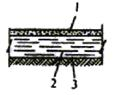 1 - защитный слой 20 см из супесчаного грунта; 2 - глина мятая слоем 50-80 см, Кf = 10-7 - 10-8 см/с; 3 - спланированное, протравленное и уплотненное основание |
+ |
+ |
+ |
- |
- |
+ |
+ |
|
2. Глиняный двухслойный с дренажной прослойкой 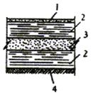 1 - защитный слой 20 см из супесчаного грунта; 2 - глина мятая слоем 50-80 см, Кf = 10-7 - 10-8 см/с; 3 - песок слоем 50 см, Кf = 10-2 см/с; 4 - спланированное, протравленное и уплотненное основание |
- |
- |
- |
- |
+ |
+ |
- |
|
3. Грунтобитумно-бетонный 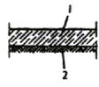 1 - грунт слоем 50 см (суглинок, супесь, песок), протравленный на глубину 20 см и обработанный нефтью или горячим битумом и цементом; 2 - спланированное, протравленное и уплотненное основание |
- |
- |
+ |
- |
- |
- |
+ |
|
Б. Бетонные и железобетонные |
|||||||
|
4. Из железобетонных плит 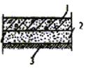 1 - сборные железобетонные плиты из тяжелого бетона марки по водонепроницаемости W8, толщиной 15 см; 2 - песок или гравийно-песчаная смесь слоем 15 см; 3 - спланированное, протравленное и уплотненное основание. При применении плит из монолитного железобетона по песчаному основанию устраивается подготовка из тощего бетона марки М75 слоем 10 см |
- |
- |
+ |
- |
- |
+ |
+ |
|
5. Из полимербетона 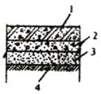 1 - полимербетон армированный слоем 8-15 см; 2 - бетонная подготовка марки М75, слоем 10 см; 3 - песок или гравийно-песчаная смесь слоем 10-15 см; 4 - спланированное, протравленное и уплотненное основание |
- |
+ |
- |
- |
+ |
- |
- |
|
6. Бетонопленочный 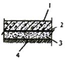 1 - сборные железобетонные плиты из тяжелого бетона марки по водонепроницаемости W6 - W8, толщиной 8-15 см; 2 - полиэтиленовая пленка в один - два слоя, стабилизированная сажей, сверху прикрытая крафт-бумагой; 3 - песок фракцией не более 3 мм, слоем 10-15 см; 4 - спланированное, протравленное и уплотненное основание |
- |
- |
- |
+ |
+ |
+ |
- |
|
В. Асфальтобетонные |
|||||||
|
7. Однослойный с битумным покрытием 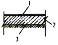 1 - покрытие горячим битумом слоем 2-4 мм с защитным слоем песка 10 мм; 2 - мелкозернистый асфальтобетон слоем 5-8 см; 3 - грунтобитумный бетон (см. экран 3) |
+ |
+ |
+ |
- |
- |
+ |
+ |
|
8. Двухслойный с дренажной прослойкой 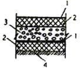 1 - покрытие горячим битумом 4-6 мм с защитным слоем песка 10 мм; 2 - мелкозернистый асфальтобетон слоем 5-8 см; 3 - гравий слоем 20-40 см, обработанный битумом на 15 см; 4 - протравленный и обработанный битумом и цементом грунт (см. экран 3) |
- |
- |
- |
+ |
+ |
- |
- |
|
9. С покрытием битумно-латексной эмульсией 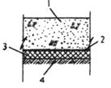 1 - защитный слой песка или суглинка толщиной 30 см; 2 - битумно-латексная эмульсия слоем 4-6 мм; 3 - мелкозернистый асфальтобетон слоем 5-8 см; 4 - грунтобитумный бетон (см. экран 3) |
+ |
+ |
- |
+ |
+ |
+ |
+ |
|
Г. Асфальтополимербетонные |
|||||||
|
10. Конструктивно асфальтополимербетонные экраны выполняются так же, как асфальтобетонные. Различие заключается в том, что асфальтополимербетонные экраны выполняются на вяжущем из битума, а асфальтополимербетонные - на модифицированном вяжущем, состоящем из битума с добавлением в него каучука или других полимеров в количестве 10-20 % массы битума, что придает им повышенную морозостойкость, эластичность и снижает водонепроницаемость |
+ |
+ |
- |
- |
- |
+ |
+ |
|
Д. Пленочные |
|||||||
|
11. Из полиэтиленовой пленки, стабилизированной сажей, однослойный 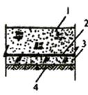 1 - защитный слой 50-80 см из мелкозернистого грунта фракцией не более 3 мм (песка, супеси, суглинка); 2 - пленка; 3 - подготовка из материала, применяемого для защитного слоя толщиной 10 см; 4 - спланированное основание (заложение откосов не круче 1:3,5) |
- |
- |
- |
- |
- |
+ |
+ |
|
12. Из полиэтиленовой пленки, стабилизированной сажей, двухслойный с дренажной прослойкой 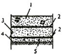 1 - защитный слой 50-80 см (см. экран 1); 2 - пленка; 3 - песок слоем 20-30 см Кf = 10-2 см/с; 4 - подготовка из материала, применяемого для защитного слоя толщиной 10 см; 5 - спланированное и протравленное основание (заложение откосов не круче 1:3,5) При устройстве пленочных экранов необходимо руководствоваться указаниями СН 551-82 |
- |
- |
- |
+ |
+ |
- |
- |
Примечания: 1. I-н - отходы I класса опасности нерастворимые; II-р - отходы II класса опасности растворимые; аналогичные обозначения для отходов III класса опасности (IIIн, IIIр).
2. Знак «+» означает, что применение экрана допускается, знак «-» - не допускается.
3. Под воздействием некоторых химических растворов глина может разуплотняться, поэтому применение ее в экранах должно быть обосновано соответствующими лабораторными испытаниями водных вытяжек отходов, подлежащих захоронению.
СОДЕРЖАНИЕ